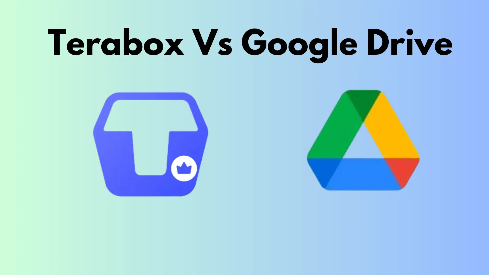

TeraBox Download vs. Google Drive: A Battle of the Cloud Titans
In today’s fast-paced digital world, cloud storage is no longer a luxury—it’s a necessity. Whether you’re saving work files, backing up family photos, or storing that ever-growing folder of memes (we’ve all got one), reliable cloud storage is key. Two big names you might have come across in your quest for the perfect cloud service are TeraBox and Google Drive. Both offer excellent features and have their own unique strengths. Today, we’ll dive into a friendly comparison, highlighting the positive aspects of each.
So, grab your favorite beverage, and let’s unravel the good stuff these platforms bring to the table.

TeraBox Download: The New Kid With a Big Backpack
TeraBox may not be as widely recognized as Google Drive, but this service is like that one kid in school who shows up with a backpack large enough to fit a small country. Why? Because TeraBox Premium Apk offers a whopping unlimited cloud storage of free right out of the gate. Yes, you read that right—a whole terabyte without spending a single penny.
-
Storage That Feels Infinite:
Tired of seeing those "storage almost full" notifications? TeraBox laughs in the face of such limitations. With its generous free storage, you can save thousands of files, videos, and photos without a second thought. Whether it’s your favorite Netflix downloads or years’ worth of high-res pictures, TeraBox handles it all like a pro.
-
User-Friendly Interface:
The TeraBox app is sleek, simple, and surprisingly intuitive. It feels like it was designed by someone who really understood how annoying complicated software can be. Navigating through folders, uploading files, and sharing links is a breeze—even your not-so-tech-savvy uncle could use it.
-
Offline Downloads:
TeraBox is perfect for when you're on the go. Need to access that presentation during a long flight? With its offline download feature, you can save files to your device and access them without an internet connection. It’s like having your cloud, even in airplane mode.
-
AI-Powered Photo Management:
If you’re the type who takes 57 photos to capture the perfect angle of your lunch, TeraBox has you covered. Its AI technology helps organize your photos into albums, making it easy to find that perfect shot.
-
Budget-Friendly for Upgrades:
While TeraBox’s free storage is fantastic, their premium plans are also easy on the wallet. For a fraction of the cost of other cloud services, you can expand your storage further and unlock additional features like faster uploads and priority support.
Google Drive: The Reliable Veteran
On the other side of the ring is Google Drive, a name so familiar it almost feels like a default option. It’s been around for years, and its reliability is one of its biggest strengths.
-
Seamless Integration With Google Workspace:
If you’re someone who lives in Gmail, Google Docs, or Google Sheets, Google Drive is like the glue that holds your productivity together. With just a few clicks, you can attach files, collaborate in real-time, and sync everything across devices. It’s so smooth it almost feels like magic.
-
Generous Free Storage:
While Google Drive offers 15GB of free storage compared to TeraBox’s 1TB, it’s still a solid amount for casual users. Plus, this 15GB is shared across Gmail and Google Photos, giving you an interconnected ecosystem.
-
Top-Notch Collaboration Tools:
Google Drive is unbeatable when it comes to teamwork. Need to work on a group project? Share a Google Doc. Planning a trip? Make a collaborative spreadsheet. Everyone can edit, comment, and contribute in real time—no messy back-and-forth emails required.
-
Security That Keeps You Covered:
Google Drive takes security seriously. With features like two-factor authentication, file encryption, and activity tracking, you can rest easy knowing your files are safe.
-
Works Everywhere, Anytime:
Whether you’re on a phone, tablet, or laptop, Google Drive is available across all major platforms. The best part? Its offline mode lets you access and edit files without internet—ideal for when the Wi-Fi decides to go on a coffee break.
If TeraBox and Google Drive were roommates, TeraBox would be the one hoarding all the snacks, while Google Drive would be the one organizing the pantry alphabetically.
Which One Should You Choose?
It all boils down to your needs:
- TeraBox: If you’re someone who has a lot of files to store and don’t want to pay for extra storage, TeraBox is a no-brainer. It’s like having an attic with endless space—you can toss in all your files without worrying about running out of room.
- Google Drive: On the other hand, if you’re part of a team or rely heavily on Google’s apps, Google Drive is your go-to. Its collaborative tools and seamless integration make it perfect for productivity enthusiasts.
Final Verdict
Terabox and Google Drive both have their unique strengths, and it’s clear that neither is trying to outdo the other in every aspect. If you’re feeling adventurous, why not use both? Let TeraBox handle your massive storage needs while Google Drive takes care of collaboration and productivity.
In the end, no matter which one you choose, you’re getting a cloud storage service that works hard to make your digital life easier. And isn’t that the ultimate goal?